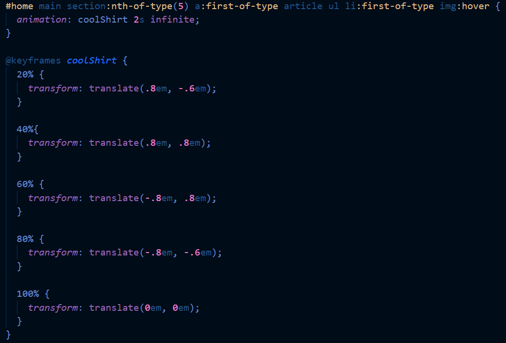

Large replica
School project
HTML - CSS - JavaScript
Visual Studio Code
In my second year at the Amsterdam University of Applied Sciences, I followed the subject Front-End Development. The subject was focused on HTML, mostly CSS and a little bit of JavaScript. Since we already had some knowledge of these languages at this point, we went a little further and got the opportunity to learn loads of new things. We got to choose an excisting website, and make a replica of two pages. We were free to experiment as much as we wanted, which made the subject a lot of fun. For the site, I chose the clothing store called Large. They sell alternative clothes and band merch, which gave me the possibility to go wild and add almost anything I wanted. This was exactly what I did!
We started off by taking screenshots of the site we were going to replicate, and make breakdown sketches to check what HTML tags we were using for the different objects. It had been a while for me since I last used HTML, so it was a little difficult. I ended up using a lot of different tags.
Throughout the weeks, we were taught new things we could do inside CSS and JavaScript, and used these things to build our own website. I built my website with a lot of fun, using all these new techniques I didn’t previously know about basically opened up an entire new world.
Once I made my site look like the original as best as I could, it was time for me to add more stuff since it was still very boring. The entire point of this project was to go wild and experiment as much as possible, wasn’t it? So that’s exactly what I did.
For my second page, I made a pretty interactive form that checks your input and validates it. It’s pretty cool how much is possible in that area, even without JavaScript.

I had a lot more ideas for my website, but both time and my abilities were still limited. I ended up making a site I was very proud of. It’s visually pleasing, and has a lot of surprising elements (the animations and music I added on the hover states). It’s probably the project I’m most proud of. I’m very happy with all the different posibilities I learned about and used a lot of them in this portfolio.
Results
- 